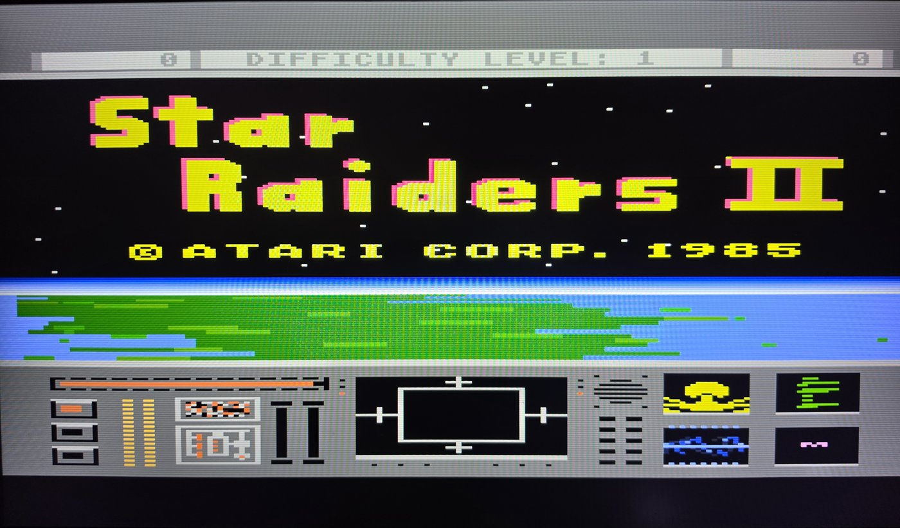
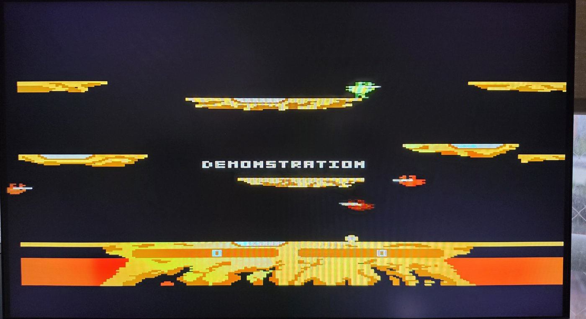
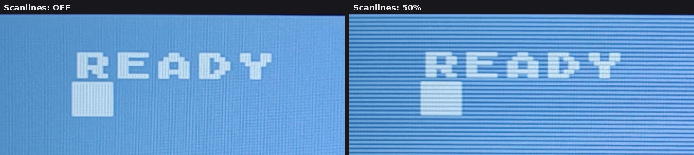

10. Video
La imagen sale de la placa por HDMI como una señal de 720 líneas sincronizada con la temporización de cuadro del propio Atari: estable, sin desgarros y con apenas un par de líneas de retardo respecto de la máquina.
Qué sale por el puerto HDMI
El Atari dibuja una imagen de 352×240 a la frecuencia NTSC. La placa la escala por un factor entero exacto de 3 hasta un área activa de 1056×720 dentro de un raster personalizado de 1216×786, y envía eso por HDMI. Cada pixel del Atari se convierte en un bloque nítido de 3×3; nada se remuestrea.
La salida está sincronizada (genlock): el reloj de pixel está enganchado en frecuencia al núcleo (core), de modo que se produce exactamente un cuadro de salida por cada cuadro del Atari. Como los conteos de cuadros y de líneas son números enteros, la imagen nunca se desplaza, nunca salta una línea ni se desgarra. No hay frame buffer: las líneas del Atari se capturan de a pocas en un pequeño búfer de líneas y se leen de inmediato, por eso la latencia es de apenas 1–2 líneas de barrido. Tu pantalla recibe una señal HD de 720 líneas.
| Propiedad | Valor |
|---|---|
| Imagen del Atari | 352 × 240 |
| Salida activa | 1056 × 720 (3× en ambas direcciones) |
| Raster total | 1216 × 786 |
| Frecuencia de cuadro | NTSC, 59.94 Hz — un cuadro de salida por cada cuadro del Atari |
| Latencia | ~1–2 líneas de barrido, sin frame buffer |


Solo NTSC
Esta es una máquina NTSC: 262 líneas por cuadro a 59.94 Hz, y el reloj de máquina NTSC exacto. No hay modo PAL ni un selector para activarlo. El software escrito para PAL funcionará, pero con temporización NTSC; consulta Títulos PAL más abajo para saber qué significa eso en la práctica.
Compatibilidad de pantallas
Necesitas un monitor o televisor HDMI 1.3 o posterior y un cable HDMI común. Ten en cuenta que, para mantenerse libre de jitter, se requiere una temporización no estándar: la señal tiene 1056×720 activos, declarada como 720p, en lugar de un 720p CEA exacto, porque la frecuencia de cuadro del Atari no divide de forma entera en ningún modo HDMI estándar. La mayoría de los televisores y monitores modernos la aceptan en una conexión directa, pero algunas pantallas estrictas o antiguas — y los equipos intermedios como splitters HDMI, receptores AV y capturadoras — pueden rechazarla ("no signal", "unsupported" o "out of range").
Pantallas probadas hasta ahora: varios televisores, monitores LCD de computador estándar, una pantalla OLED externa y una pantalla 4:3 de 9 pulgadas construida en torno a un panel de iPad, todos los cuales aceptaron la imagen sin ningún problema. Los dispositivos de captura (capturadoras HDMI a USB) todavía no se han probado; si usas una, vale la pena reportar cómo se comporta, sea cual sea el resultado.
Scanlines
Se puede mezclar en la imagen un efecto de scanlines (líneas de barrido) al estilo CRT. Abre el OSD, elige Options (opciones) y recorre Scanlines por OFF, 25%, 50% y 75%. El cambio se aplica de inmediato, sobre la imagen en vivo, así que puedes comparar los ajustes con el juego que estás jugando. Save changes (guardar cambios) lo almacena en atari.ini como scanlines= (0–3; por defecto 0 = OFF). Consulta Opciones y atari.ini.

Posición horizontal
Si tu pantalla recorta el borde izquierdo o derecho, o la imagen queda descentrada, desplázala con Options → H position (posición horizontal). Usa ← / → (o izquierda/derecha del joystick) para moverla; el rango es de 0 a 48 y la imagen se mueve en vivo mientras ajustas. Se guarda como hpos= (por defecto 0).
Pérdida de señal HDMI en un arranque en frío
En algunos encendidos en frío la salida HDMI puede perderse brevemente y luego recuperarse — la pantalla pierde la señal por un momento y vuelve — mientras el Atari sigue funcionando por debajo. Es un comportamiento conocido de la salida de video al encender; no es un bloqueo y no requiere ninguna acción. Si la imagen no vuelve, consulta Solución de problemas.
Títulos PAL en una máquina NTSC
Unos pocos juegos PAL exigentes muestran sprites corruptos, una imagen que salta o tiembla, o se congelan durante el juego. Dos ejemplos conocidos:
- Tiger Attack (Atari UK, 1988) — sprites corruptos; congelamientos ocasionales.
- Astro Droid (Red Rat Software, 1987) — temblor vertical; sprites corruptos o con colores incorrectos.
La causa más probable es que se trata de juegos PAL corriendo en una máquina solo NTSC. Ambos son títulos británicos de bajo costo construidos en torno a la temporización PAL de ANTIC (312 líneas a 50 Hz) y a un scroll fino vertical agresivo en cada cuadro — escribiendo VSCROL a mitad de cuadro, a menudo desde interrupciones de display list. En una máquina NTSC (262 líneas a 60 Hz) las regiones de scroll, las líneas objetivo de las interrupciones y las posiciones de los sprites ya no coinciden, lo que produce exactamente estos síntomas. Un Atari real, o un MiSTer, configurado en NTSC se comporta de la misma manera. No es un problema de carga ni una falla de la memoria o de la ruta de video de la placa: los juegos con scroll compatibles con NTSC, como River Raid, que usan scroll grueso actualizado una vez por cuadro, no se ven afectados.